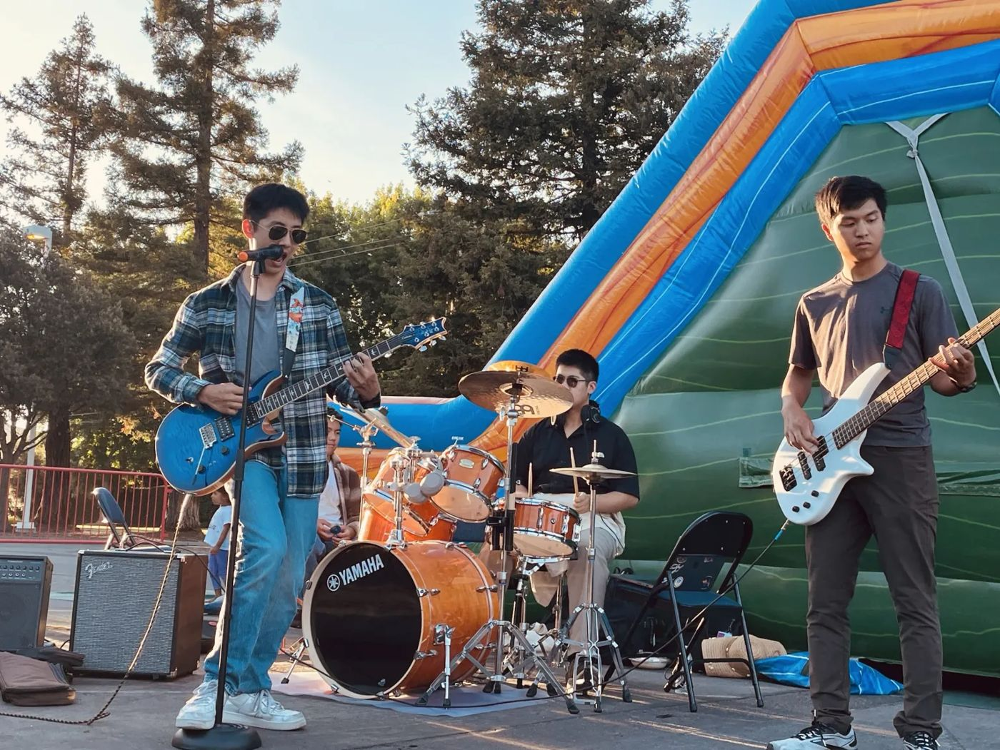
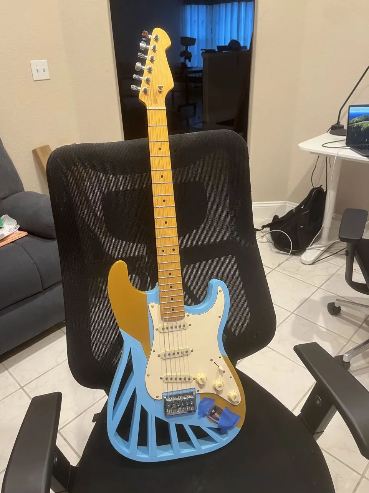
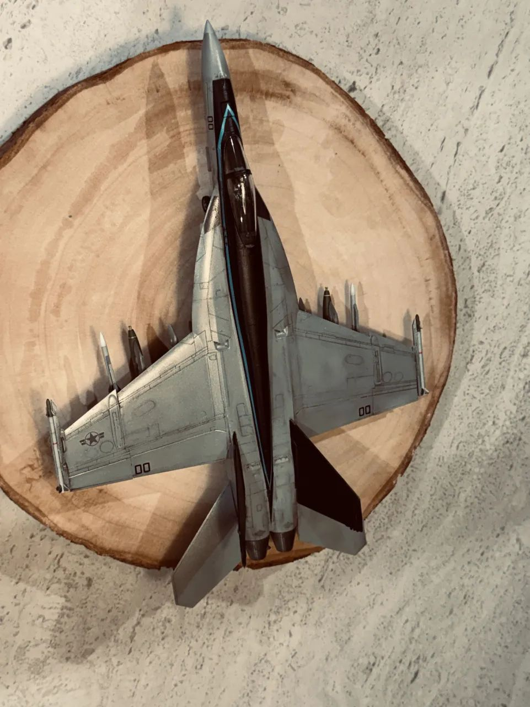
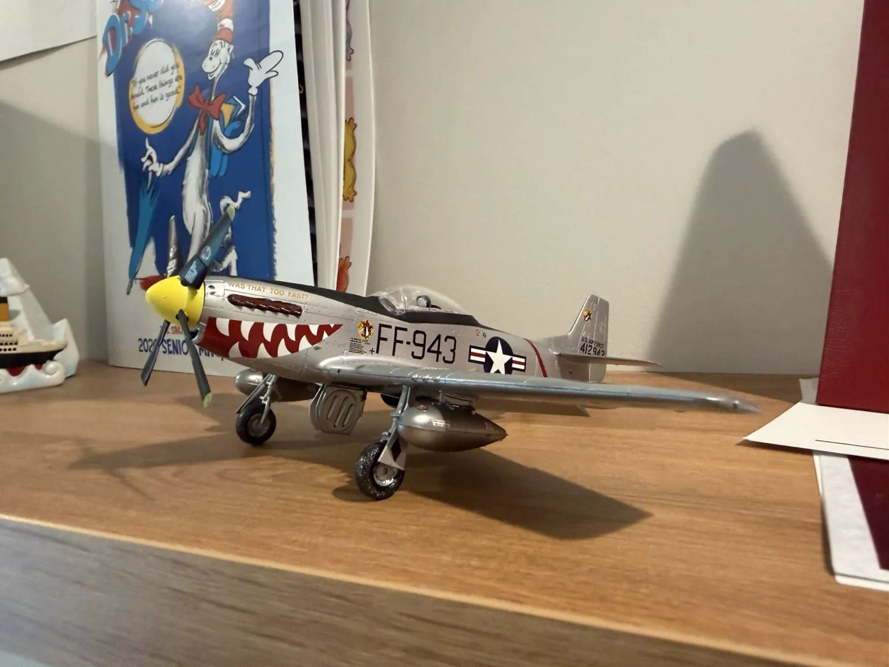
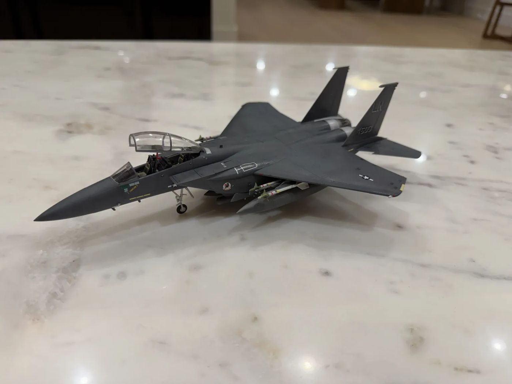
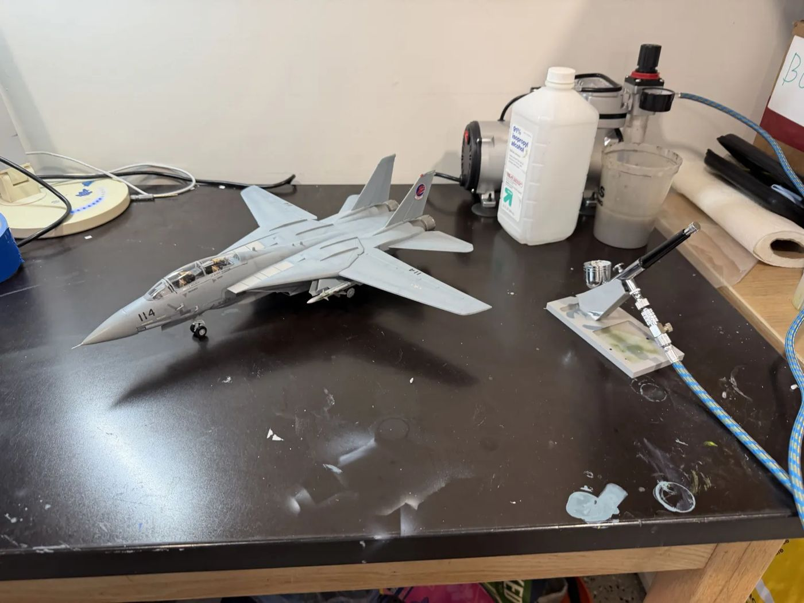
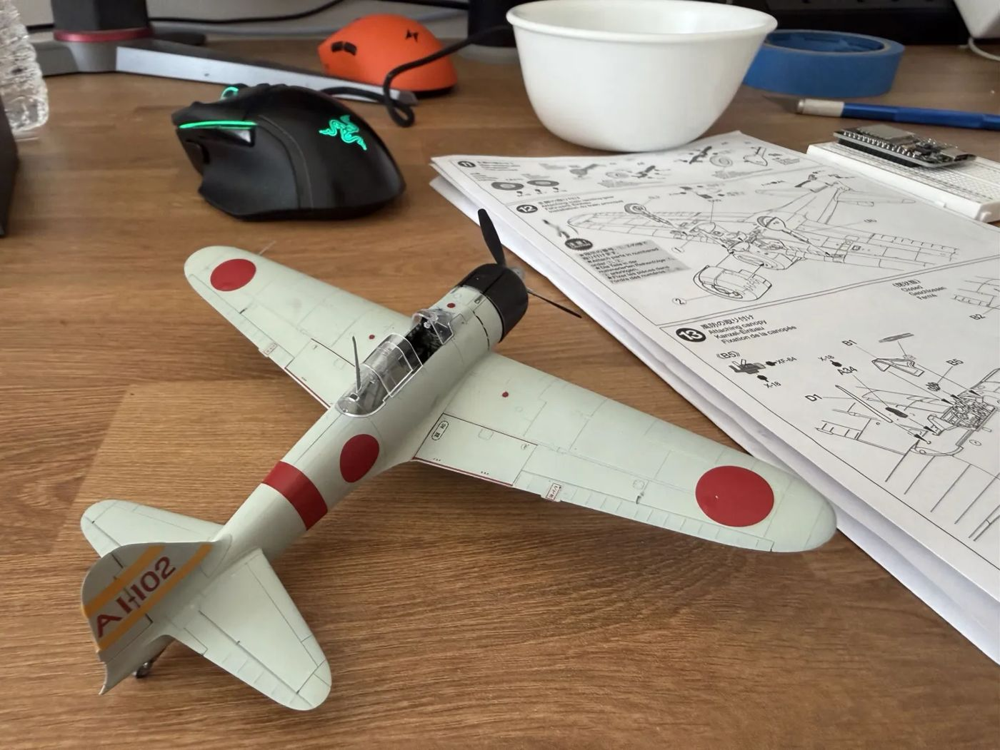
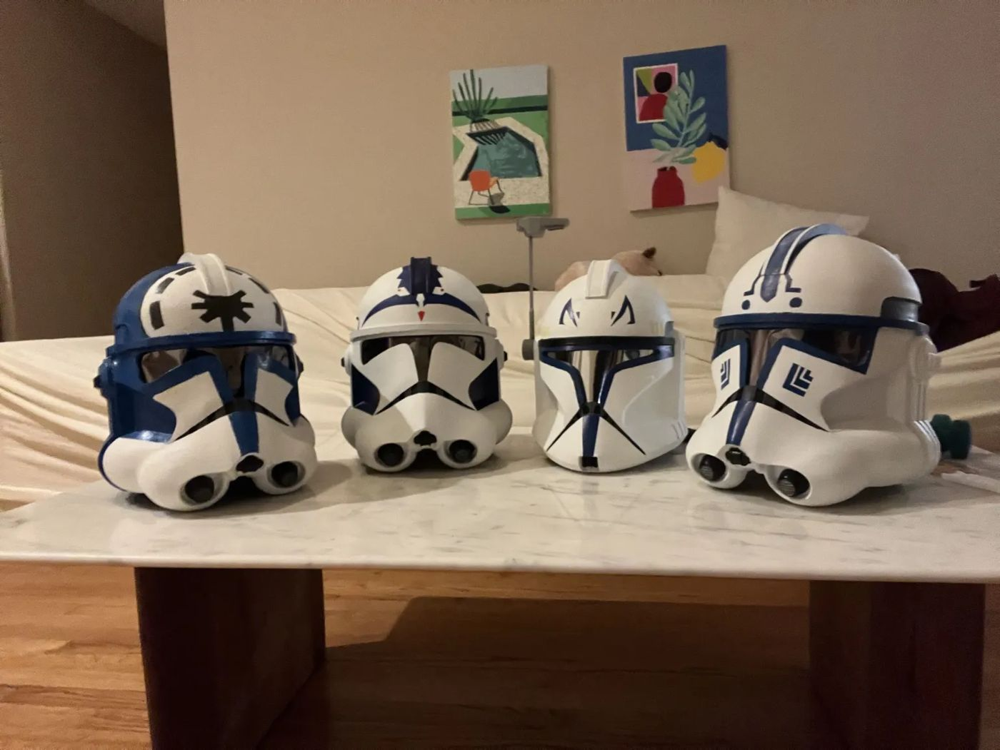

I'm Alec, and I'm not just a mechanical engineering student at UIUC. Here's what I spend my time on when I'm not working on the car.
I play guitar. In high school I started a band called Pollen Prone, named after our collective affliction: pollen allergies. We played a bunch of school events.
I also built a playable electric guitar with a 3D-printed body, which is where my music and engineering hobbies ran into each other.


I build and paint scale model aircraft.





Almost every project I've built uses 3D-printed parts, but I print for fun too. I'm a big Star Wars fan, and for Halloween, I printed and painted a set of clone trooper helmets from The Clone Wars so my friends and I could all dress up together.
